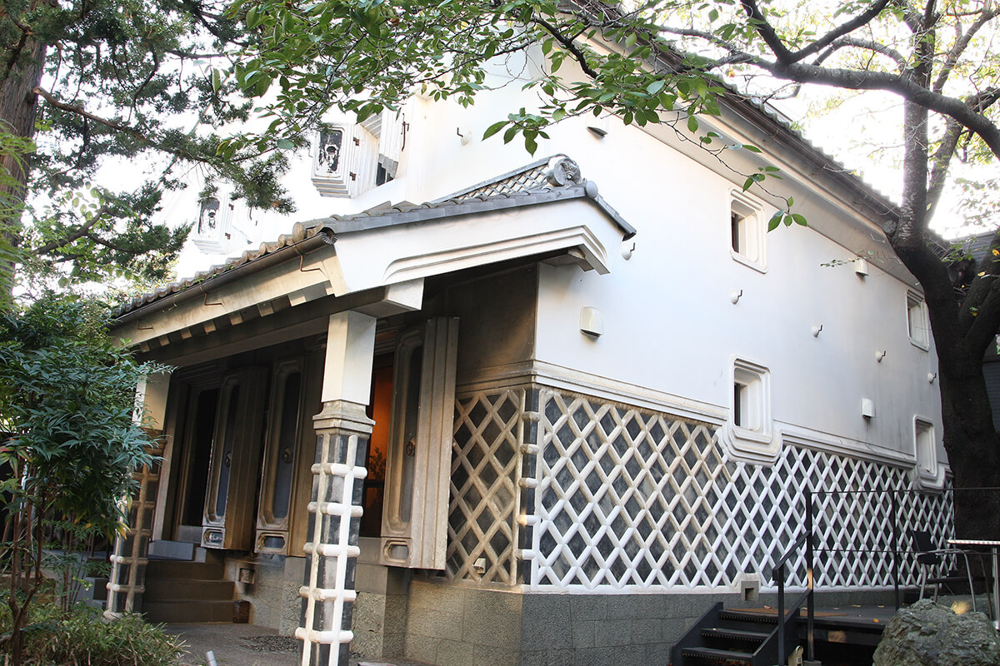
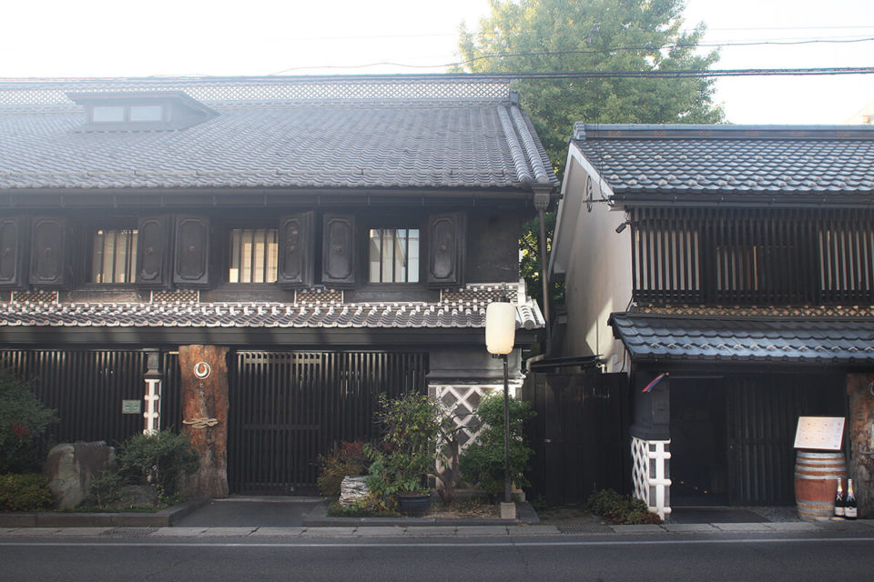
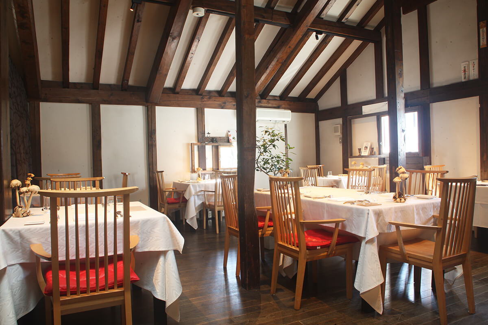
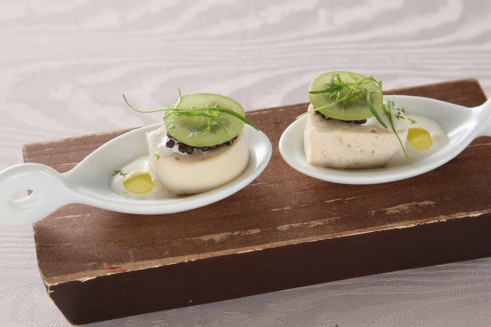
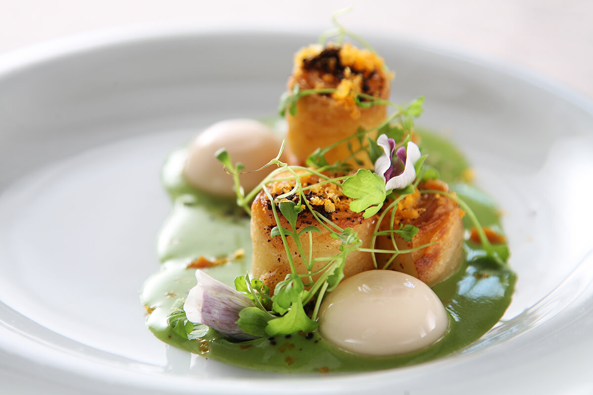
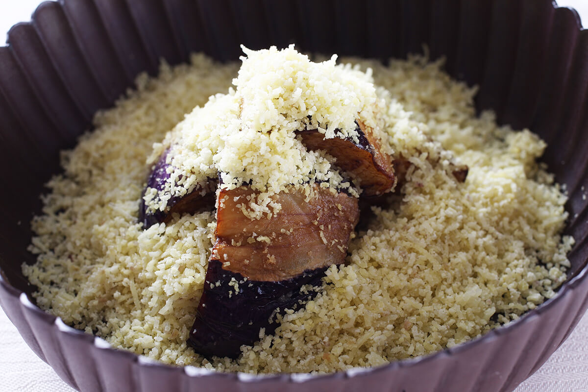
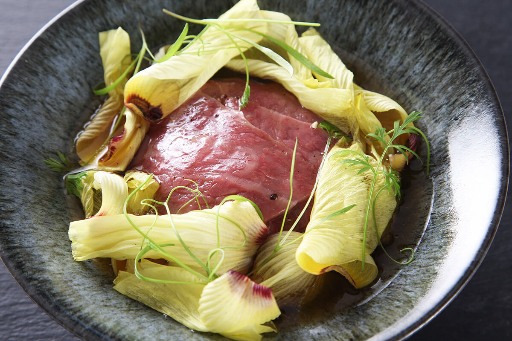

Префектура Нагано · Мацумото · еда
Hikariya Nishi: французская кухня из овощей Мацумото в купеческом амбаре 1887 года

В Мацумото на старой дороге к храму Дзэнко-дзи стоит купеческая усадьба 1887 года. В её амбаре работает Hikariya Nishi, французский ресторан, где главную роль играют не мясо и рыба, а овощи.
Здание
Купеческая усадьба эпохи Мэйдзи
Через Мацумото проходила старая дорога паломников к храму Дзэнко-дзи, и на ней сохранился дом, фасад которого с первого взгляда поражает своей мощью. Усадьбу с амбарами в 1887 году построила знатная купеческая семья. Дом называли «Хикаруя», и он считался одним из лучших зданий Мацумото. Чёрная стена вдоль дороги тянется метров на пятнадцать и через сто с лишним лет выглядит всё так же строго.

Одно время дом собирались снести. Он уцелел благодаря владельцу, у которого в Мацумото есть отели и рёканы: в 2008 году он открыл здесь Restaurant Hikariya. В перестройке ему помогал известный специалист по восстановлению старых японских домов.
В главном доме работает японский ресторан Hikariya Higashi, а в перестроенном амбаре Hikariya Nishi, ресторан природной французской кухни («натюрель») на основе макробиотики. На одном участке два ресторана, японский и европейский, и это само по себе редкая роскошь.

О ресторане ходили слухи: будто у него свои грядки, а шеф имеет диплом консультанта по макробиотике. Но больше всего удивляет, как тщательно ухожен весь ресторан: он сам по себе выглядит законченным произведением. От кухни после этого ждёшь многого.
Кухня
Овощи Синсю в главной роли

Шеф-повар Масахиро Танабэ руководит кухней с 2008 года, с того дня, как Restaurant Hikariya открылся. Ему было тогда 33 года, и он смело объявил, что будет готовить французскую кухню, где главное это овощи. К 2020 году овощи уже никого не удивляли рядом с рыбой и мясом, но в 2008 году французская кухня означала прежде всего мясо. Для Танабэ же овощи давно были главной темой.
«Я понял это, когда учился во Франции. Вкус у европейских овощей действительно гуще. Зато японские овощи сочные, у них есть аромат. Вот на этом вкусе я и хотел построить свою кухню»
шеф-повар
Для такой кухни нужно жить рядом с полями. Мечта шефа была такая: своя грядка, и каждое утро он сам смотрит, что созрело, и берёт это в работу. «И вот однажды, когда я об этом думал, мне предложили работу здесь».

В Мацумото вкусная вода, и овощи, которые на ней растут, получаются именно такими сочными, о каких мечтал шеф. «Здесь можно весь год работать с овощами сколько хочется!» В двух-трёх минутах езды от ресторана во все стороны тянутся поля. Для повара это мечта, и он решил открыть здесь французский ресторан, где всё строится вокруг овощей. Так появился Hikariya Nishi.
Поставщики
Около 250 хозяйств

В 2020 году ресторан работал примерно с 250 поставщиками. Шеф объездил город и префектуру и своими глазами видел, кто и какие овощи выращивает. «У нас есть и своя грядка, за ней ухаживают три сотрудника. Только корнеплоды мы доверяем профессионалам».
Ужин из овощей Мацумото оставляет ощущение естественной, ненарочитой кухни: из сезонных продуктов вкус извлекают спокойно, без лишних усилий и без отходов. Запоминается сочность, а не водянистость. Иногда шеф позволяет себе и игру.

Официанты рассказывают о каждом блюде, о продуктах и о замысле шефа, и ужин проходит неторопливо. И главное, цены разумные: обед стоил от 3200 иен, ужин от 5900 иен в 2020 году.
«Хочется, чтобы к нам приходили за вкусной и полезной едой. Было бы прекрасно, если бы гость заглянул просто так: простыл немного, вот и зашёл выпить супа»
шеф-повар
Hikariya Nishi
- Адрес
- префектура Нагано, Мацумото, Отэ, 4-7-14
- Телефон
- +81 263-38-0186
- Часы работы
- 11:30–13:30 (последний заказ), 18:00–21:00 (последний заказ)
- Выходные
- среда
- Цены / Вход
- обед от 3200 иен, ужин от 5900 иен
Фото: Мунэаки Маэда.